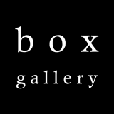

current exhibitions:
 the yellow square, string on paper, 75x75in
the yellow square, string on paper, 75x75in
Ted Laredo
afterglow
January 28 - March 5, 2011
Opening Reception: Friday, January 28, 5-8 pm

Laredo's use of phosphorescent acrylic paint and glass micro beads invites viewing in a multitude of light conditions: in the dark an equal but opposite experience of the same work is achieved.
In his mono-diptychs Laredo employs reflective glass micro beads and deep-hued monochromatic acrylic on panel. Writes Laredo: The solidity of the monochrome gives way to an ethereal inner light.
His geometric wall-drawings - necker's cube; honeycomb cells - are constructed in cotton twill tape painted with phosphorescent acrylic.
They appear three-dimensional; they fluctuate in perspective, and seem to float in negative space.